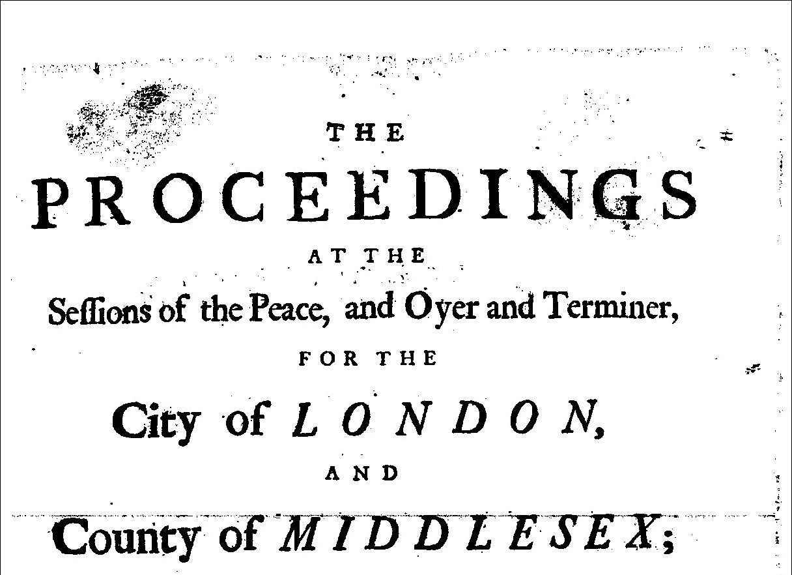
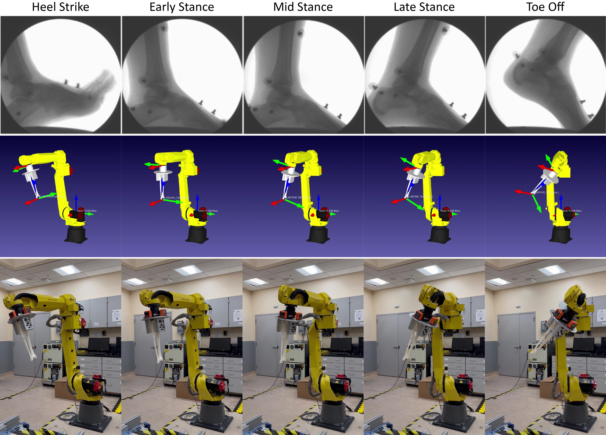

Projects

Exploring Text Classification for Predicting Trial Outcomes in Old Bailey Proceedings
- Implemented various learning algorithms (ID3, Perceptron, SVM, logistic regression) from scratch using Python and NumPy to predict trial outcomes in the Old Bailey court transcripts (Kaggle dataset)
- Constructed a neural network with Tensorflow/Keras to address the nonlinearity in the dataset, outperforming all other models, achieving 81% accuracy on the Kaggle evaluation dataset, and placing 11th overall in a class of 142 students
- Explored data preprocessing (cleaning, binning), dimensionality reduction (PCA, SVM), and data normalization (L1, L2, min/max) techniques to improve prediction performance using Python and NumPy
- Gained expertise in algorithm selection, feature engineering, feature representation, and hyperparameter tuning in machine learning model development

Towards an Autonomous Surgical Retraction System via Uncertainty Quantification
- Analyzed two different methods of uncertainty quantification (deep ensembles and Monte Carlo dropout) using PyTorch for identifying potential task failures in learned surgical soft-tissue manipulation policies for the DeformerNet framework
- Determined that deep ensembles provide more accurate uncertainty estimations, with the slope of ensemble variance effectively distin guishing between successful and unsuccessful tissue manipulation actions

Mobile Air Quality Monitoring in the Salt Lake Valley
- Visualized geospatial air quality data collected from research-grade pollutant sensors on light-rail cars and e-buses (courtesy of the Department of Atmospheric Sciences at the University of Utah) using Python, Geopandas, Matplotlib, Contextily, Folium, and Seaborn
- Identified correlations between socioeconomic data by ZCTA to underscore the disparities in air quality exposure and the environmental injustice for those living in the west side of the Salt Lake Valley using Python, Pandas, Matplotlib,and scikit-learn

Replicating In Vivo Tibial Motion with a 6-Axis Industrial Robotic Manipulator
- Reproduced 3D in vivo tibial gait motion from biplane fluoroscopy-tracked data on a 3D-printed tibia attached to an industrial 6-axis robotic manipulator using Python, RoboDK, and ROS

Finite Element Model of Biphasic Contact in the Tibiotalar Joint
- Developed FEA models that represent the tibiotalar joint with different articular morphologies to compare the biphasic-on-biphasic mechanical contact properties in healthy and progressively osteoarthritic conditions using FEBio

Monte Carlo Simulation of the Monty Hall Problem
- Implemented Monte Carlo simulation in a game show given choice of three doors, a car behind one and goats behind others

Stability Analysis of a Nonlinear Model Predictive Controller for Functional Electrical Stimulation
- Examined NMPC stability using Lyapunov Theory and tuned an PID controller for leg extension in a musculoskeletal model using MATLAB and OpenSim

Implementation and Examination of a Mathematical Model for Predicting Muscle Force and Fatigue
- Utilized the ode45 function to model isometric muscle forces using MATLAB
- Performed a sensitivity analysis on physiological parameters in muscle force and fatigue prediction using MATLAB

Implementation of Convolutions Neural Networks for Iceberg Classification in Satellite Radar Data
- Implemented a CNN to identify if a remotely sensed object was a ship or iceberg from satellite image data using Python and Tensorflow/Keras, achieving 87% accuracy on the Kaggle evaluation dataset

Semi-Autonomous Mobile Robot for Jenga Gameplay
- Built a completely custom mobile robot with a 5-axis manipulator using 3D-printed parts, DC motors, LIDAR, IMUs, Raspberry Pi microcontrollers
- Designed a control system that leveraged LIDAR data for autonomous navigation and user input for block picking and manipulation using C++

Trajectory Optimization of Human Arm Reaching Model in OpenSim
- Implemented iLQR algorithm for an object reaching task in a biomechanical human arm model moving in the sagittal plane using MATLAB and OpenSim

Safe Feedback Motion Planning with Unknown Dynamics for Car Model in MATLAB
- Augmented stochastic trajectory optimization with LQR feedback control for mobile robot motion planning using MATLAB